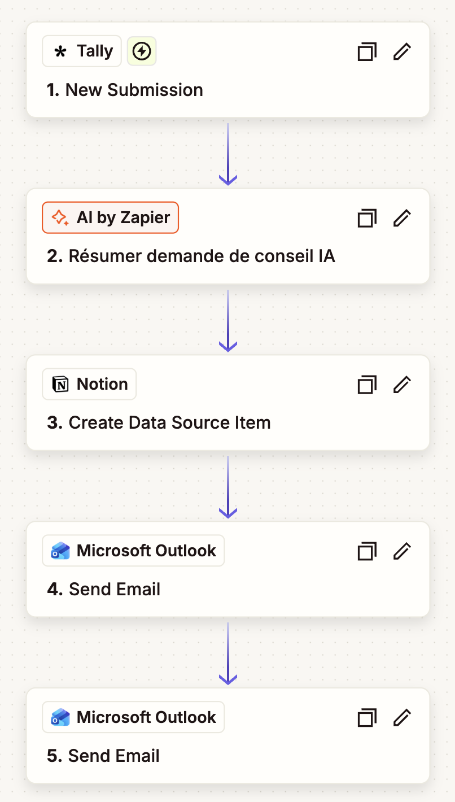
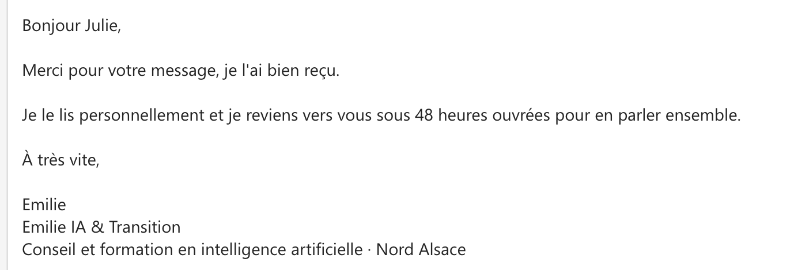

Le point de départ
Une demande de contact, c'est souvent un futur client. Pourtant, quand on travaille seule, elle se perd vite : un mail lu entre deux rendez-vous, une réponse remise à plus tard, une information notée sur un coin de cahier.
Je voulais trois choses : que la personne sache tout de suite que sa demande est bien arrivée, que je comprenne son besoin d'un coup d'œil, et que rien ne se perde.
Ce qui se passe quand vous remplissez le formulaire
- Le formulaire (Tally). Vous indiquez qui vous êtes, votre structure et votre besoin, en donnant votre accord pour être recontacté.
- Le résumé (IA). Une IA lit la demande, la résume en deux phrases simples et propose l'offre qui correspond le mieux : Pro, Junior, Déclic & Sérénité ou un atelier. Elle a une consigne claire : ne rien inventer.
- La fiche (Notion). Une fiche se crée toute seule dans mon tableau de suivi, avec le résumé, l'offre suggérée et le statut « Nouveau ».
- L'accusé de réception (Outlook). Vous recevez un message personnalisé, avec votre prénom, qui confirme que je vous réponds sous 48 heures ouvrées.
- L'alerte (Outlook). Je reçois un mail avec l'essentiel : qui, pour quoi, et l'offre à préparer.

Le résultat, sur un exemple de test
Pour tester, j'ai joué le rôle d'une boulangère fictive qui souhaite former son équipe de cinq personnes à ChatGPT. Voici ce que le système a produit, sans aucune intervention de ma part.
- Organisation
- Boulangerie Martin, Wissembourg
- Profil
- Entreprise / indépendant
- Offre suggérée
- Emilie IA Pro
- Résumé IA
- L'équipe de cinq personnes souhaite apprendre à utiliser ChatGPT. Elle veut gagner du temps sur les devis, les mails clients et les publications Facebook.
Fiche créée automatiquement dans Notion (données fictives de test).

Ce que j'en retiens
- L'IA prépare, l'humain décide. L'IA résume et propose une offre, mais c'est moi qui lis chaque demande et qui réponds personnellement.
- Le diable est dans les détails. Le bon formulaire, la bonne base, les bons champs : la plupart des blocages venaient d'un réglage, pas de l'IA.
- Tester avec un vrai cas. Un exemple réaliste montre tout de suite si le résumé et l'offre ont du sens.
- Le minimum de données. L'IA ne reçoit que ce dont elle a besoin pour résumer, pas le téléphone ni l'adresse e-mail.
Automatiser, ce n'est pas remplacer la relation. C'est libérer du temps pour elle.
Et pour vous ?
Devis, prises de rendez-vous, relances, réponses aux questions fréquentes : beaucoup de petites tâches répétitives peuvent être automatisées avec des outils simples et abordables. Dans mes accompagnements Emilie IA Pro, nous repérons ensemble celles qui vous font perdre du temps, puis nous construisons une première automatisation, testée sur vos vrais cas.